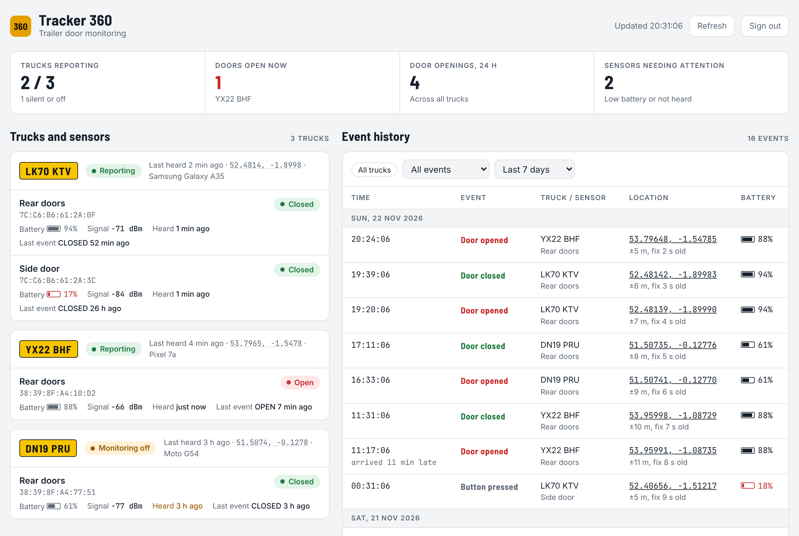
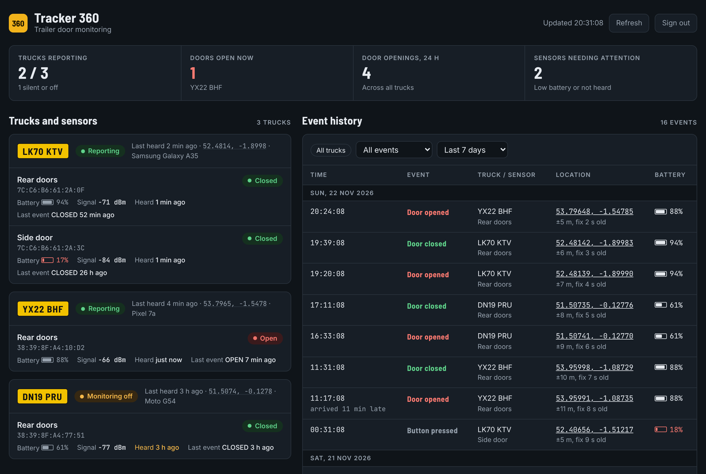
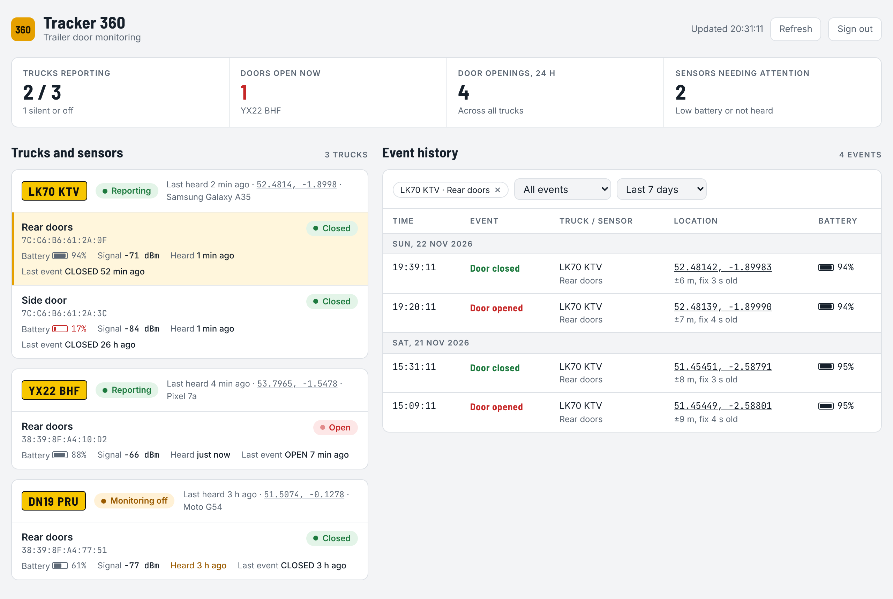
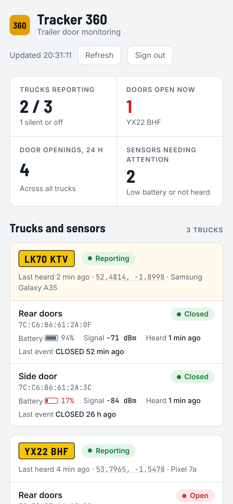
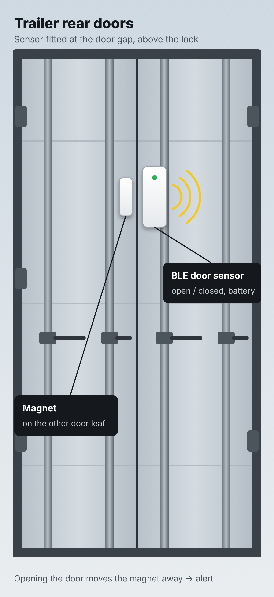
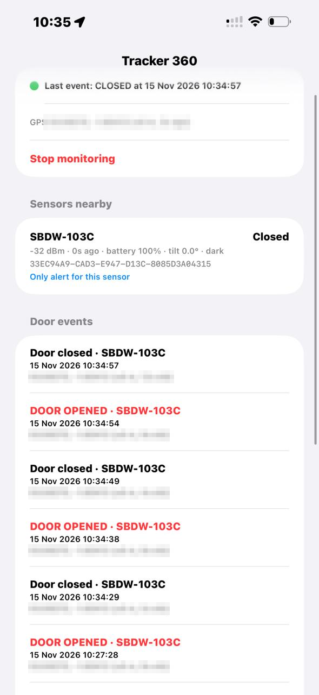
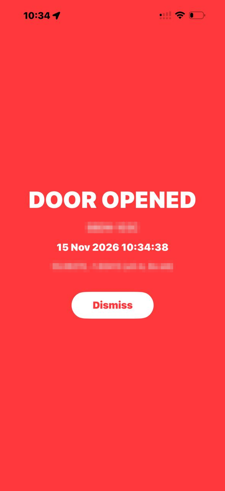
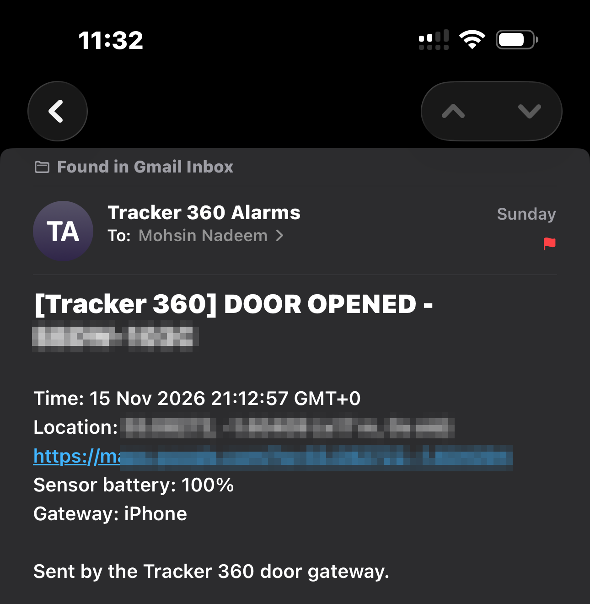
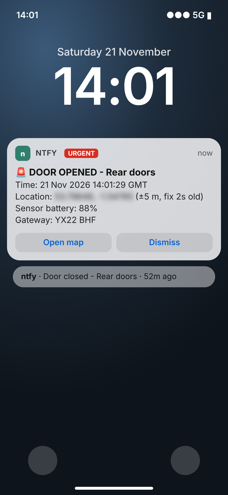

A low-cost cargo security system for goods owners. A door sensor on the trailer, a dedicated phone in the cab, and an instant alert with time and GPS position on the owner's phone, inbox and web portal.
Goods owners who ship through subcontracted hauliers usually have no view of what happens to the trailer between collection and delivery. Tracker 360 gives them that view with off-the-shelf hardware: no fleet telematics contract, no wiring into the truck.
A low-cost Bluetooth Low Energy door sensor sits on the trailer door. Tracker 360 is not tied to one brand: any sensor that broadcasts the open BTHome format works, and each logistics customer can use the sensors that suit their fleet.
A dedicated phone provided by the shipping company, not the driver's own phone, runs the Tracker 360 app. It listens for the sensor, adds time and GPS position, and forwards every door event.
Within seconds the owner gets an urgent push alert with a map link, an email from alarms@inovaltd.com, and the event appears in the web portal alongside every truck and sensor.
The gateway phone does all the work in the truck. Each output has its own offline outbox, so an event raised in a signal blackspot is delivered, marked late, as soon as the phone is back online.
ntfy topic per truck. Urgent priority for door opened, with a Google Maps link.
Relay script sends as alarms@inovaltd.com through Microsoft 365, to one or more owner addresses.
Supabase (Postgres). Events uploaded on each change, plus a 5-minute heartbeat per sensor.
The portal lists each gateway phone by registration with its sensors, live door state, battery, signal and when each was last heard. The event history shows every opening with time, GPS position and a map link, and flags events that arrived late because the truck had no signal.




Screenshots use the portal's built-in sample data (made-up trucks and events) so no real customer locations are shown.
Steps 2 to 4 are real screenshots from a test on 15 November 2026, with an off-the-shelf BLE door sensor and an iPhone as the gateway. GPS positions are blurred. Steps 1 and 5 are illustrations.





{"type": "OPEN",
"time_text": "21 Nov 2026 14:01:29",
"address": "AA:BB:CC:10:20:30",
"lat": 52.41230, "lon": -1.51870,
"accuracy_m": 5.0, "battery": 88,
"source": "tracker360-android"}
42-second animated walkthrough built from the screenshots on this page.
Every part was chosen so a pilot runs on free tiers and consumer hardware, with a clear path to a hosted product.
Open BTHome v2 format (service UUID 0xFCD2), supported by several sensor makers. No vendor cloud or lock-in; other sensor formats can be added to the gateway.
Foreground service with filtered BLE scanning, fused GPS, notification channels, offline outboxes. Android 8 and later.
Test build of the same gateway for iOS 16 and later, same alert format as Android.
Open-source push notifications with priorities, so a door opening can break through Do Not Disturb. Self-hostable.
Sends as alarms@inovaltd.com from Microsoft 365, to an allow-listed set of owner addresses.
Row-level security. Phones can only call one ingest function with a per-gateway secret; portal users sign in to read.
No build step, refreshes every 30 seconds, works on desktop and phone. Hostable anywhere.
Every push builds the Android APK, runs the unit tests (BTHome decoding, alerts, portal sync) and builds the iOS app.
Door monitoring is the first use. The gateway decodes BTHome, an open standard used by many low-cost Bluetooth sensors, and the portal stores events by sensor and event type. Adding a new kind of sensor reuses the gateway, the alerts and the portal.
Rear and side doors on trailers and containers.
BTHome 0x2D windowCold-chain loads: food, pharmaceuticals. Alert when a reading leaves its safe range.
BTHome 0x02 temp · 0x03 humidityThe gateway already records position with every event. Add route history, unexpected stops and depot geofences.
Phone GPSDetect pallets removed, heavy impacts or tilting loads using motion, vibration and distance sensors.
BTHome motion · vibration · distanceA sudden light change in a closed trailer can reveal a cut curtain side, which bypasses door sensors.
BTHome 0x05 illuminanceTrigger a photo or clip when a door opens, attached to the alert and the portal record.
Gateway camera / IP cameraThe gateway reads an open standard, so each logistics company can use the sensors it already trusts. The phone in the cab listens to many sensors at once.
Push, email and portal already carry any event type with time and location, including the offline outbox.
Trucks, sensors and events are already modelled generically, so new readings appear beside door events.
Tracker 360 is built by Inova Global Ltd. If you move goods by road and want to know the moment a trailer door opens, we would like to hear from you.
Email info@inovaltd.com